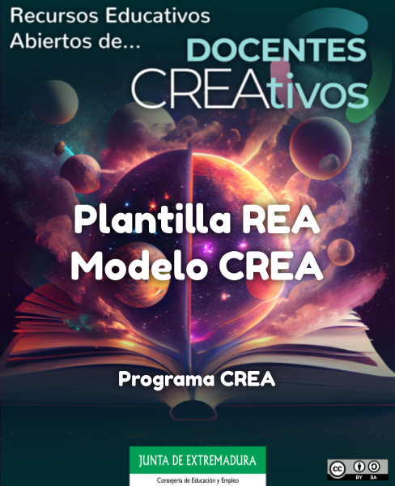

Guía didáctica

Título: REA "Nombre del recurso educativo".
Temática: tema tratado en el recurso, para hacerlo fácil de reconocer.
Autoría: Autor(a)1 y Autor(a)2, para programa CREA.
Materia: la asignatura o asignaturas para las que está destinado el REA.
Metodología: aprendizaje basado en proyectos (ABP), o el que corresponda.
Curso: el curso o cursos para los que es más recomendable el uso del REA.
Sesiones: número de sesiones presenciales.
Producto final: breve descripción de aquello que pediremos al alumnado que realice. Al docente que lea esta guía le servirá para saber si le interesa llevar este REA a su aula. El tiempo total de dedicación para realizar el proyecto (por ejemplo el tiempo de casa) es muy importante que se especifique. Se incluyen las correspondientes rúbricas de evaluación.
Descripción: breve descripción de no más de 1000 caracteres, indicando cómo es el REA.
[*] Todos estos datos son los que aparecerán en la ficha de la web. Ver ejemplo.
[A continuación, algunos apartados para dar una descripción más en profundidad. Podemos modificarlos o incluir lo que consideremos más conveniente]
El recurso educativo
Toda esta parte está dedicada a hacer una descripción más detallada del REA, dirigida al profesorado, para informarle de lo que se encontrará en el REA y cómo lo trabajará con el alumnado, sin necesidad de que revise a fondo todos los contenidos.
Así le ayudamos a decidir si este recurso se ajusta a sus necesidades. Por eso, es importante que hayamos dado una orientación del número de sesiones que tendrá que dedicar, para qué metodología se ha pensado y cuál será la principal actividad que realice el alumnado de cara a su evaluación.
En las siguientes pestañas describiremos brevemente los apartados que hay en el REA y qué tipo de contenido y actividades se ofrece en ellos para el alumnado.
Así, el profesorado sabrá qué ofrece este REA de cara a su actividad docente.
Objetivos didácticos
Objetivos del proyecto
Podemos dedicar esta pequeña subsección a nombrar los objetivos didácticos de la situación de aprendizaje o proyecto que estamos proponiendo.
Si hay varias, se pueden nombrar uno a uno. Recordemos que el propósito de la guía didáctica es dejar claro al profesorado qué le ofrecemos y qué utilidad puede darle nuestro REA.
Contenidos del recurso
Aquí describiremos las secciones o los bloques del REA, indicando brevemente qué se trabajará en ellas.
Evaluación y calificación
Forma en la que evaluaremos a nuestro alumnado.
- Recursos necesarios
-
Indicaremos aquí, si es preciso, la lista de recursos necesarios para llevar a cabo la situación de aprendizaje.
Tecnológicos
- ...
Materiales
- ..